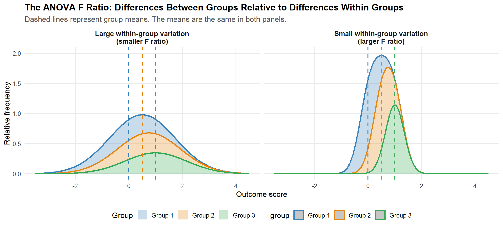

Chapter 4 ANOVAs Part I
ANOVA: Part I
In this chapter we are going to discuss the family of Analysis of Variance (ANOVA) analyses that are typical in HHS research. These start from a place of between groups analyses that focus on comparison of means scores across multiple groups. That is the One-Way ANOVA. Other ANOVA models will include:
- Multiple IVs or factors (factorial ANOVA)
- Covariates or control variables (ANCOVA)
- Multiple Outcomes (MANOVA)
- Repeated-measures ANOVA (RMANOVA)
- mixed-design ANOVAs, which include both within-person and between-person factors.
What is an ANOVA? Why would you do one?
ANOVAs are an analysis that is typically done to compare means across 3 or more groups.
Let’s take for example a comparison of Hmong American adolescents who were classified into three groups based on their experiences as cultural and language brokers.
Note
Hmong are a refugee group originally from the mountain regions of Laos who were drawn into the Vietnam conflict by US forces. Upon US withdrawal from SE Asia, many Hmong fled persecution and violence and were placed in refugee camps in Thailand. Many were granted refugee status to come to the US. There are an estimated 400,000 Hmong in the USA with the largest populations in California, Minnesota, Wisconsin, and North Carolina.
Cultural and language brokering refers to children in immigrant families serving as translators/interpreters for non-English speaking parents and also teaching parents about social rules and norms in the US.
(im2025?)
In a survey of 7th grade adolescents, I asked students about experiences as cultural and language brokers. Based on those responses, I classified students into one of three groups: (1) Low, (2) Moderate, and (3) High. The classification reflected adolescents who reported very low engagement in cultural/language brokering or just doings things like answering the phone. Moderate engagement was some frequency of doing translating, particularly at school. High engagement referred to adolescents who frequently translated for parents including in “high stakes” settings like medical appointments.
My research questions included:
- Do Hmong adolescents who engage in high levels of cultural and language brokering differ from adolescents who are lower in cultural and language brokering?
- In terms of self-esteem, conflict with parents, and GPA
One main hypothesis I had was:
- Hmong adolescents who engage in high levels of cultural and language brokering will report higher mean levels of culture-related conflicts with parents compared to adolescents who engage in moderate and low engagement.
From the perspective of an ANOVA, the null hypothesis would be: \[H_0: \mu_{low} = \mu_{moderate} = \mu_{high}\] Where \(\mu\) refers to group means
An appropriate statistical test to evaluate this hypothesis would be an ANOVA because of the comparison of means across three groups. The specific details of ANOVAs, computing \(F\) statistics, and other technical points come later. Here we are focused on the conceptual aspect of what ANOVA is testing, how to run the ANOVA, and its interpretation.
The central test statistic in ANOVA is the \(F\) statistic. Just like when we do a \(t\)-test, there is a critical values associated with \(F\) that is determined by the chosen significance level (\(\alpha\), often .05) and the model degrees of freedom (\(df\)). Unlike a \(t\)-test, however, the \(F\)-distribution requires two sets of degrees of freedom: one for the numerator (between-groups variation) and one for the denominator (within-groups variation).
The \(F\) statistic is computed from the sample data. If the obtained \(F\) statistic exceeds the critical value, or equivalently if the \(p\)-value is less than \(\alpha\), the researcher rejects the null hypothesis and concludes that there is a statistically significant difference among the population means. Specifically, the conclusion is that at least one group mean differs from at least one other group mean, although the ANOVA itself does not indicate which groups differ. Follow-up analyses, such as posthoc tests, are needed to determine the specific group differences.
A common follow up test is the \(Tukey\) Honestly Difference test that will do group-by-group posthoc tests to identify specific statstically significant differences across the three groups (as in our case).
Typically it is also helpful to see the means stratified by group and to compute a measure of effect size, \(\eta^2\) or \(\omega^2\).
Technical Details about ANOVAs
Why can’t we just stick with \(t-tests\)?
For the above study, I might have thought about doing \(t-tests\). For example, couldn’t I have just done one \(t-test\) comparing the LOW group to the moderate group, then another \(t-test\) comparing the LOW to the HIGH group and another to test moderate versus HIGH?
While that is possible, there is a statistical problem that occurs when running multiple tests. When running multiple tests, researchers run the risk of creating Type I Error Inflation. What that means is that multiple tests increase the risk of committing Type I errors (rejecting a null that really is true, i.e., claiming a significant difference that is not really different).
Think about the various different research questions we might have related to group comparisons: Is motivation to exercise different across adults who played different types of sports? Are reports of anxiety different across different sexual orientation and gender identity groups?
These questions involve tests of more than two groups and doing multiple \(t-tests\) would raise lead to alpha inflation and raise the familywise error rate.
NoteFamily wise Error Rate (FWE)
When we think of Type I errors, we think about a specific test. For example, what is the probability of us making a Type I error when doing a \(t_test\) to evaluate if males have higher self-esteem than females. This is a per-comparison error rate
When we conduct multiple statistical tests, such as a series of pairwise \(t_test\)s across several groups or outcomes, those tests form a family of tests. The probability of making at least one Type I error across that entire set of tests is called the familywise error rate (FWE).
FWE refers to the probability of incorrectly rejecting at least one true null hypothesis when multiple statistical tests are conducted. In general, as the number of statistical tests increases, the likelihood of obtaining a statistically significant result purely by chance also increases.
Consequently, the FWE becomes larger than the target significance level (e.g., α = .05) used for any individual test.
The formula to compute the increase in the FWE is \(\alpha_{FWE} = 1 - (1 - \alpha)^K\)
If doing 3 comparisons:
\(H_0: \mu_1 = \mu_2 = \mu_3\)
\(\alpha_{fw} = 1 - (.95)(.95)(.95) = 1 - .95^3 = 1 - .8574 = .1426\)
This suggests that, if all null hypotheses are true and the three tests are independent, there is about a 14.3% chance of obtaining at least one statistically significant result by chance alone.
Put differently, even when there are no real group differences, running three separate tests at (\(\alpha\) = .05) makes it more likely that random sampling variation will make one of them appear statistically significant.
Note
Note that the above procedure assumes independent tests.
A different approach is the Bonferroni bound:
\[\alpha_{FW} \leq 3(.05) = .15\]
This means that if we conduct three tests, each at (\(\alpha\) = .05), the probability of making at least one Type I error is no greater than (15%).The Bonferroni bound does not assume that the tests are independent. It works even when the tests are related or share data, as pairwise comparisons among group means often do.
Because it gives an upper limit rather than an exact probability, it may be somewhat conservative. In this example, the actual family-wise error rate could be below (15%), but Bonferroni guarantees that it will not exceed (15%).
When running multiple tests, The Bonferroni correction is a simple way to keep the overall probability of one or more false positives at or below a chosen family-wise significance level.
The rule is:
\(\alpha\_{\text{per test}} = \frac{\alpha_{\text{family-wise}}}{\text{number of tests}}\)
If we want the family-wise error rate to stay at (.05) and we have three comparisons:
\(\alpha\_{\text{per test}} = \frac{.05}{3} = .0167\)
Therefore, instead of using (\(p\) < .05) for each comparison, we use:
\(p < .0167\)
A comparison must have a \(p\)-value below (.0167) to be statistically significant after the Bonferroni correction.
Example
Imagine the three pairwise tests produce these results:
| Comparison | Original \(p\)-value | Significant using \(p\) <.05)? | Significant after Bonferroni? |
|---|---|---|---|
| Group 1 vs. Group 2 | .011 | Yes | Yes |
| Group 1 vs. Group 3 | .021 | Yes | No |
| Group 2 vs. Group 3 | .004 | Yes | Yes |
After the Bonferroni correction, the cutoff is (.0167):
- .011 < .0167), so Group 1 vs. Group 2 is significant.
- .021 > .0167), so Group 1 vs. Group 3 is not significant.
- .004 < .0167), so Group 2 vs. Group 3 is significant.
Another way: adjust the \(p\)-values
Instead of lowering the cutoff, we can multiply each \(p\)-value by the number of tests:
\[p_{\text{adjusted}} = p \times m\]
where \(m\) is the number of comparisons.
For three tests:
\[p_{\text{adjusted}} = 3p\]
Any adjusted \(p\)-value above 1 is reported as 1. `
For the earlier example:
| Comparison | Original \(p\)-value | Bonferroni-adjusted \(p\)-value |
|---|---|---|
| Group 1 vs. Group 2 | .011 | .033 |
| Group 1 vs. Group 3 | .021 | .063 |
| Group 2 vs. Group 3 | .004 | .012 |
We then compare the adjusted values to (.05):
- (.033 < .05): significant
- (.063 > .05): not significant
- (.012 < .05): significant
This produces the same decisions as using the corrected cutoff of .0167.
Important tradeoff
The Bonferroni correction reduces false positives, but it also makes it harder to find real effects.
In other words:
- It lowers the chance of a Type I error (false positive).
- It can increase the chance of a Type II error (missing a real difference).
For a small number of planned comparisons, such as three, Bonferroni is easy to use and often reasonable. For many comparisons, it may be too strict, and other methods—such as the Holm correction or Tukey’s HSD—may be better choices.
ANOVA overcomes the alpha inflation problem by focusing on one test.
- The \(F\) test is an omnibus test of whether there are mean differences across multiple levels of a factor
- That one test controls FWE rates and reduces risk of Type I error
- The test only suggests that mean differences exist in two at least one pair of group means
- Often follow-up tests are needed to sort out specific differences across groups or levels of factors
One Way ANOVA details
Addresses mean difference questions across multiple groups.
- Conceptually ANOVAs are extensions of \(t_test\)s
- Doing an ANOVA with two groups would be the same as a \(t_test\)
- ANOVAs are multiple group, non-directional tests
- Use one Type I error rate
The technical statistical test asks:
- Are the observed group differences larger than would be expected due to random variation?
Instead of comparing two means directly, ANOVA compares:
- Between-group variability to within-group variability
So while our goal is to compare means, the Analysis of Variance includes evaluations of variances as a means to test for group differences.
The Logic of ANOVA
If groups truly differ:
- Group means should be far apart and individuals within groups should be relatively similar
Note
Take this back to a \(t_test\) for a moment. The \(t_test\) formula is a ratio of mean differences over variability within groups.
\[t = \frac{\bar X_1-\bar X_2} { \sqrt{ s_p^2 \left( \frac{1}{n_1}+\frac{1}{n_2} \right) }}\]
The resulting t-ratio is conceptually a ratio of between group differences (in means; the numerator) to within group variation. What this formula basically is saying is that the difference between two groups (variation between groups) is evaluated by standard errors that capture within group differences (how different participants in each group are; within group differences)
ANOVA evaluates:
\[F = \frac{ \text{Between-Group Variance} }{ \text{Within-Group Variance} }\]
Understanding the F Ratio
Let’s think about what this means: The ANOVA is creating a ratio of between group variance to within group variance
- The between group variance is going to capture differences in the means across groups - i.e., how the means vary or differ across/between groups
- The within group variance is going to capture differences in scores within groups, or how different people in the same group are from each other
- A bigger F essentially means that groups differences are relatively large relative to within group differences
Computing the F Ratio
To compute the F Ratio, we would need to compute the between group variation and the within group variation, then compute that ratio.The resulting ratio can be thought of an index of separation between the groups.
Technically the F Ratio is computed by dividing the Mean Sum of Squares for the between group variation \(MS_B\) and the Mean Sum of Squares for the within-group variation \(MS_W\).
The hand calculation involves computing each of these two values, then creating the ratio.
Example: Culture-based conflicts with parents by level of language brokering
Remember, I want to compare mean levels of culture-based conflicts in a sample of adolescents across low, moderate, and high levels of language and cultural brokering.
We will use a few cases first to demonstrate how to calculate the \(F\) statistic, then use the full data to run an ANOVA.
# These are data I collected in 2009 from a sample of Hmong 7th grade students
# in Burke County, NC
# These are just a few cases where I categorized the adolescents based on their
# participation in "cultural/language brokering" for their parents. For this example I
# just randomly sampled 10 cases in each of the three conditions
# I created three categories based on adolescents' involvement in language
# brokering being 'low' (not much involvement), 'moderate' (answering phone,
# needing to be home to translate) and 'high' (needing to go to medical appointment,
# translate across many domains)
# I want to compare adolescent outcomes across brokering types
# Pretty table
demo_table %>%
gt(rowname_col = "Case") %>%
fmt_number(
columns = c(Low, Medium, High),
decimals = 2
) %>%
tab_header(
title = "AAFCS Scores by Brokering Group"
) %>%
cols_label(
Low = "Low",
Medium = "Moderate",
High = "High"
)| AAFCS Scores by Brokering Group | |||
| Low | Moderate | High | |
|---|---|---|---|
| 1 | 31.00 | 30.00 | 25.00 |
| 2 | 19.00 | 22.00 | 29.00 |
| 3 | 26.00 | 36.00 | 35.00 |
| 4 | 42.00 | 21.00 | 34.00 |
| 5 | 35.00 | 15.00 | 31.00 |
| 6 | 27.00 | 40.00 | 32.00 |
| 7 | 23.00 | 33.00 | 30.00 |
| 8 | 15.00 | 30.00 | 33.00 |
| 9 | 19.00 | 38.00 | 37.00 |
| 10 | 27.00 | 31.00 | 39.00 |
| Mean | 26.40 | 29.60 | 32.50 |
Note: This table shows values of AAFCS scores (Asian American Family Conflicts Scale) for 10 randonly select 7th graders from each of the three cultural/language brokering groups. The bottom row shows the group means.
The first step in manually computing an ANOVA F Statistic is to compute the Mean Squares of the Between group variance
Quick reminder the variance of a set of scores is computed by summing deviations from a mean
\[s^2 = \frac{\sum (X_i - \bar{X})^2}{n - 1}\] The variance for group American-Oriented Group would be the sum of squared deviations, divided by the sample size (minus 1). We would take each score, subtract the group mean, square that value, then sum that number, then divide by 9.
The analogous formula for the Between-Group Variance (\(MS_B\)) = \(SS_B/df\)
\(SS_B/df\) is computed as an extension of the variance for a sample (above). The differences between each group mean j and the grand mean squared are multiplied by the group sizes \(N_j\) and then summed to get the \(SS_B\). The degrees of freedom are the number of groups \(K - 1\).
\[= \sum_{j=1}^{K} N_j (\bar{X}_j - \bar{X})^2\]
\[df = K-1\]
Which leads to:
\[MS_B = \frac{SS_B}{df}\]
In addition to computing the \(MS_B\) we also compute the \(SS_W\)
That means that the \(F\) statistic is comparing/computing two sources of variance: Between group variance and within group variance.
Note
The Between Groups SS is just the deviations of each group mean from the grand mean squared, then summed, and multiplied by the number of values in each group. That value is then divided by the between groups \(df\) which is \(K\)-1 (or # of groups, minus 1).
In our case since these groups are equal, then \(N_1\) = \(N_2\) = \(N_3\) = 10
The mean of the groups are:
\(\bar{Low}\) = 26.40 \(\bar{moderate}\) = 29.60 \(\bar{High}\) = 32.50 and the grand mean = (26.40+29.60+32.50)/3 = 29.50
The computation for \(SS_B\) then would be
mean_low<-26.40
mean_med<-29.60
mean_hi <-32.50
grand_mean<-29.50
group_size_low<- 10
group_size_med<- 10
group_size_hi <- 10
SS_B <- ((mean_low-grand_mean)^2)*10 + ((mean_med-grand_mean)^2)*10 +
((mean_hi-grand_mean)^2)*10
# Then the MS_B is calculated as SS_B/K-1 or
MS_B <- SS_B/2
MS_B[1] 93.1The computation of the \(SS_W\) is a bit more complicated in that this captures within group variance and necessitates subtracting each individual score from the group mean.
The group means are 26.40, 29.60, and 32.50 for the Low, Moderate, and High brokering groups, respectively. Individual participant’s scores within each group are deviated from those means, then squared, then summed. Those values capture within group variance.
\[ SS_W = \sum_{j=1}^{K}\sum_{i=1}^{n_j}(X_{ij}-\bar{X}_{j})^2 \]
\[X_ij\] = The i or individual score in group j (low, moderate, high)
\[\bar{X}_j\] = The group mean, e.g., the low group mean of 26.40
So each deviation in a group squared, then summed together, then summed across the groups
# Create group means in the data
# Aggregate command sorts, sort scores in aafcs by brok_three, using toy_brokering
# note "toy" is just a term for a practice dataset
# aggregate using means
group_means <- aggregate(aafcs ~ brok_three, data = toy_brokering, mean)
# Add the means back into the data using "merge"
# merge the group_means back in as a variable, sort by the brok_three
# so each participant in a group gets the group mean as their score
# suffixes just gives the name to the variable
toy_brokering <- merge(toy_brokering, group_means, by = "brok_three",
suffixes = c("", "_mean"))
# Squared deviations from group mean
# Create an object call deviations
# that is going to be scores for each participants' aafcs score
# subtracting out their group mean scores - deviated from a group mean
# then those values are squared to get the squared deviations
toy_brokering$deviations<- (toy_brokering$aafcs - toy_brokering$aafcs_mean)^2
# Sum them up to get the total SS_W
SS_W <- sum(toy_brokering$deviations)
# Just print the SS_W value
SS_W[1] 1317.3Then the within-groups mean square is computed as:
\[MS_W = \frac{SS_W}{df_W}\]
where
\[df_W = N - K\]
k = 3 # Number of groups
df_b = k-1
n = 30 # sample size
df_w = n-k
MS_W = SS_W/df_w
MS_W[1] 48.78889The F statistic is then computed as:
\[F = \frac{MS_B}{MS_W}\]
Large values of F indicate that between-group variability is much larger than within-group variability, suggesting that at least one group mean differs from the others.
The null hypothesis is \[H_0 = \mu_1 = \mu_2 = \mu_3\]
where \(mu\) is each group mean.
The \(F\) is evaluated for statistical significance if the test statistic we just computed is more extreme than the critical value for \(F\) at our chosen p value and the model number of degrees of freedom.
At \(a\) < .05 with degrees of freedom of 2 and 27
- These are the \(df\) for the \(MS_B\) which is \(K-1\) and \(MS_W\) which is \(N-K\)
we can consult a table to see that the critical value is 3.35 for this p value and combination of \(df\)
Alternatively we can use an R function to compute the critical value
# Critical F for alpha = .05
qf(.95, df1 = 2, df2 = 27)[1] 3.354131Our value of
F_Stat = MS_B/MS_W
F_Stat[1] 1.908221F_Stat > 3.35[1] FALSEHow to run the same ANOVA using R instead
# aov command
# broker_anova = an object that includes the results
# affcs ~ brok_three = aafcs scores conditioned on brok_three
# data is the dataset to use
# summary is the command/function to read out the results
broker_anova<-aov(aafcs ~ brok_three, data = toy_brokering)
summary(broker_anova) Df Sum Sq Mean Sq F value Pr(>F)
brok_three 2 186.2 93.10 1.908 0.168
Residuals 27 1317.3 48.79 # Now we will run an ANOVA with the actual data n = 85
# Note that missing data takes this down to n = 80
broker_n85 <- aov(aafcs ~ brok_three,data=brokering_df)
summary(broker_n85) Df Sum Sq Mean Sq F value Pr(>F)
brok_three 2 455 227.5 3.511 0.0347 *
Residuals 77 4990 64.8
---
Signif. codes: 0 '***' 0.001 '**' 0.01 '*' 0.05 '.' 0.1 ' ' 1
13 observations deleted due to missingness# Since this produced a statistically significant F, we will typically want to do
# follow up tests and to see the means as well
# Means by group in the full data
model.tables(broker_n85, type = "means")Tables of means
Grand mean
26.8
brok_three
Low Medium High
24.27 29.57 28.41
rep 37.00 21.00 22.00# Then the posthoc test
TukeyHSD(broker_n85) Tukey multiple comparisons of means
95% family-wise confidence level
Fit: aov(formula = aafcs ~ brok_three, data = brokering_df)
$brok_three
diff lwr upr p adj
Medium-Low 5.301158 0.04497224 10.557344 0.0476073
High-Low 4.138821 -1.04059837 9.318240 0.1428085
High-Medium -1.162338 -7.03155893 4.706884 0.8840506# Effect size for the overall effect
eta_sq= 455 / (455+ 4990)
eta_sq[1] 0.0835629
NoteSample Write up
A one-way analysis of variance (ANOVA) was conducted to examine differences in AAFCS scores across participants with low, moderate, and high levels of cultural brokering. There was a statistically significant F(2, 77) = 3.51, p = .035, η² = .084 indicating mean differences in AAFCS scores across groups. Group means indicated that participants in the moderate brokering group (M = 29.57) reported the highest AAFCS scores, followed by the high brokering group (M = 28.41) and the low brokering group (M = 24.27).
Posthoc tests (Tukey’s HSD) suggested that the moderate brokering group scored significantly higher than the low brokering group (mean difference = 5.30, 95% CI [0.04, 10.56], p = .048). The differences between the high and low brokering groups (mean difference = 4.14, p = .143) and between the high and moderate brokering groups (mean difference = -1.16, p = .884) were not statistically significant.
| Source | SS | df | MS | F | p | η² |
|---|---|---|---|---|---|---|
| Between Groups | 455.04 | 2 | 227.52 | 3.51 | .035 | .084 |
| Within Groups | 4989.76 | 77 | 64.80 | |||
| Total | 5444.80 | 79 |